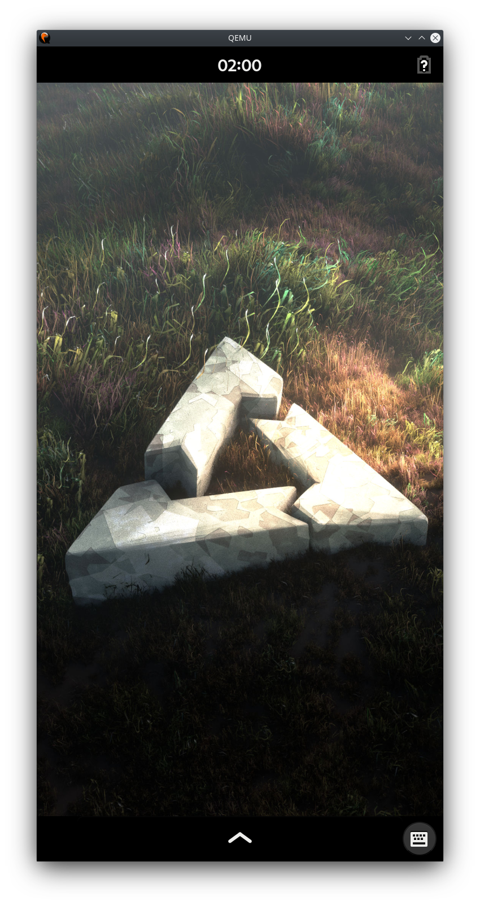

QEMU amd64 (qemu-amd64)
|

QEMU running Phosh |
|
| Manufacturer | QEMU |
|---|---|
| Name | amd64 |
| Codename | qemu-amd64 |
| Released | 2003 |
| Category | main |
| postmarketOS kernel | 5.10 (LTS) |
| Hardware | |
| Chipset | QEMU Standard PC |
| CPU | QEMU Virtual |
| GPU | Virgil 3D |
| Architecture | x86_64 |
| Non-Android based device | ✔ |
{kind=link}
| USB Networking |
Unavailable
|
|---|---|
| Flashing |
Unavailable
|
| Touchscreen |
Unavailable
|
| Display |
Works
|
| WiFi |
Unavailable
|
| FDE |
Works
|
| Mainline |
Works
|
| Battery |
Unavailable
|
| 3D Acceleration |
Works
|
| Audio |
Works
|
| Bluetooth |
Unavailable
|
| Camera |
Unavailable
|
| GPS |
Unavailable
|
| Mobile data |
Unavailable
|
| SMS |
Unavailable
|
| Calls |
Unavailable
|
| USB OTG |
Unavailable
|
| NFC |
Unavailable
|
| Accelerometer |
Unavailable
|
|---|---|
| Magnetometer |
|
| Ambient Light |
|
| Proximity |
|
| Hall Effect |
|
| Barometer |
|
| Power Sensor |
|
| Keyboard |
|
|---|---|
| Touchpad |
|
| USB-A |
|
| HDMI/DP |
|
| Ir TX |
|
| TrustZone |
|
| FOSS bootloader |
|
This device is used for testing purposes. It is possible to run postmarketOS in a x86_64 Virtual Machine.
Contributors
- ollieparanoid
- MartijnBraam
- Minecrell
- drebrez
Usage
First, install pmbootstrap .
$ pmbootstrap init # Choose device "qemu-amd64"
$ pmbootstrap install
$ pmbootstrap qemu
See
pmbootstrap qemu --help
for more options.
Network
If selecting
none
in the user interface selection, the only network managing application that will be installed is
ifupdown-ng
. It expects
/etc/network.d/interfaces
to exist, which we currently don't ship, and therefore you won't have network. Use
pmbootstrap install --add=networkmanager
to make sure networkmanager gets added and networking works automatically.
Alternatively, use Alpine's setup tools in tty propmt:
$ sudo setup-interfaces
$ sudo ifup eth0
It probably makes sense to add
/etc/network.d/interfaces
to
device-qemu-amd64
since this is likely something that people run often into. If you do, feel free to submit a patch and then edit this section here in the wiki.
Audio
Audio is disabled by default. To enable audio, select an audio backend (usually
pa
for PulseAudio or
alsa
for ALSA), and pass:
$ pmbootstrap qemu --audio pa
What works
- Storage
- Network
- Keyboard and mouse
- Graphical interfaces (Weston, Plasma Mobile, ...)
-
osk-sdl - Audio
Screenshots
- QEMU running weston
{kind=link}
- QEMU running Plasma Mobile
{kind=link}